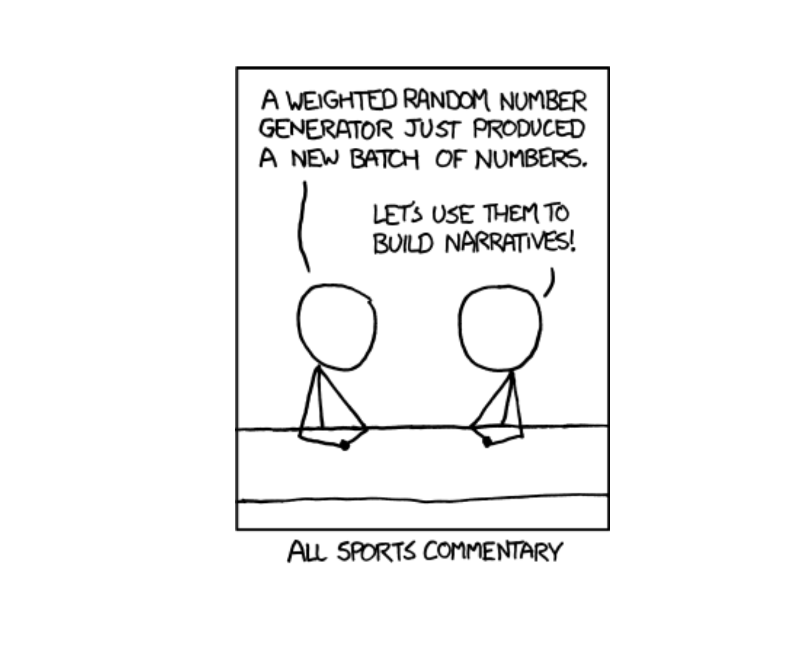
Lesson 9: Binomial Distribution
Calendar
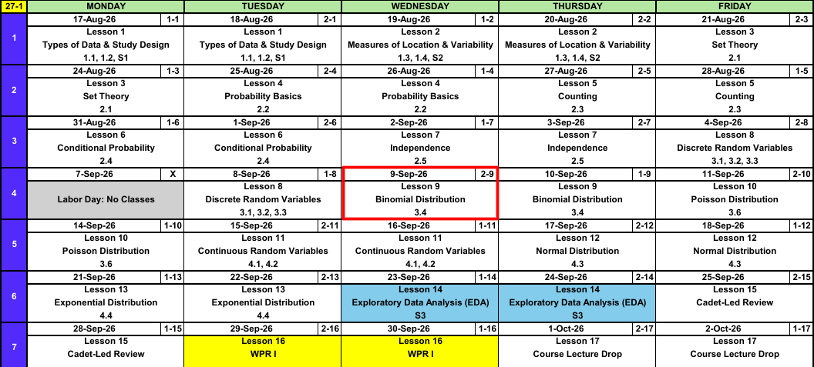
What We Did: Lessons 1 through 8
NoteReview: Data, Study Design, and Summaries (Lessons 1 and 2)
- Population vs sample, parameter (\(\mu\), \(\sigma\), \(p\)) vs statistic (\(\bar{x}\), \(s\), \(\hat{p}\)).
- Random sampling buys generalization, random assignment buys causation.
- Center: mean, median, trimmed mean. Spread: \(s^2\), \(s\), and the fourth spread \(f_s\).
NoteReview: Set Theory and Probability Basics (Lessons 3 and 4)
- Experiment, sample space \(\mathcal{S}\), event as a subset of \(\mathcal{S}\).
- Union is “or”, intersection is “and”, complement is “not”.
- Three axioms, the complement rule \(P(A') = 1 - P(A)\), and the addition rule \(P(A \cup B) = P(A) + P(B) - P(A \cap B)\).
- Equally likely outcomes: \(P(A) = N(A)/N\).
NoteReview: Counting (Lesson 5)
- Product rule: \(n_1 n_2 \cdots n_k\).
- Permutation (order matters): \(P_{k,n} = \dfrac{n!}{(n-k)!}\).
- Combination (order does not): \(\dbinom{n}{k} = \dfrac{n!}{k!\,(n-k)!}\).
NoteReview: Conditional Probability (Lesson 6)
- Conditional probability: \(P(A \mid B) = \dfrac{P(A \cap B)}{P(B)}\).
- Multiplication rule: \(P(A \cap B) = P(A \mid B)\,P(B)\).
- Law of Total Probability: \(P(B) = \sum_{i=1}^{k} P(B \mid A_i)\,P(A_i)\).
- Bayes’ Theorem flips the conditioning, and \(P(A \mid B) \ne P(B \mid A)\).
NoteReview: Independence (Lesson 7)
- Independent: \(P(A \mid B) = P(A)\), tested with \(P(A \cap B) = P(A)\,P(B)\).
- Independence collapses the conditional, multiplication, and addition rules.
- Mutually exclusive is not independent. Disjoint events are as dependent as events get.
- \(P(\text{at least one}) = 1 - P(\text{none})\), and “none” is a product under independence.
NoteReview: Discrete Random Variables (Lesson 8)
- A random variable \(X\) assigns a number to every outcome in \(\mathcal{S}\).
- pmf: \(p_X(x) = P(X = x)\), with \(p_X(x) \ge 0\) and \(\sum_x p_X(x) = 1\).
- cdf: \(F_X(x) = P(X \le x)\), a step function that jumps by \(p_X(x)\) at each value.
- For a discrete \(X\), \(\le\) and \(<\) are not interchangeable.
We ran out of time before expected value and variance, so we finish those first, then name our first distribution.
What We’re Doing: Lesson 9
Objectives
- Finish Lesson 8: compute the expected value \(E(X)\) and variance \(V(X)\) of a discrete random variable. (SLO 7)
- Identify a binomial experiment and verify its conditions. (SLO 7)
- Compute binomial probabilities using the pmf and cdf (tables and software). (SLO 7, 4)
- State and interpret the mean and variance of a binomial random variable. (SLO 7)
Required Reading
Devore 3.3 (carryover) and 3.4
Admin
R-Lite
Download R-Lite from Canvas today. We demonstrate it in class this lesson.
- Every distribution from here on has a one line R-Lite call.
- You will need it for WPR I, so do not wait.
Guest Lecture
- Who: COL Tim Sikora, commander of the Cyber Protection Brigade, math instructor here from 2016 to 2019.
- When: 30 Sep, Dean’s Hour.
- Where: Robinson Auditorium.
Finishing Lesson 8: Expected Value and Variance
Where We Left Off
Remember this function? The pmf of \(X\), which says where the probability sits.
\[p_X(x) = \begin{cases} 0.1 & \text{if } x = 0 \\ 0.2 & \text{if } x = 1 \\ 0.4 & \text{if } x = 5 \\ 0.3 & \text{if } x = 6 \\ 0 & \text{otherwise} \end{cases}\]
| \(x\) | 0 | 1 | 5 | 6 |
|---|---|---|---|---|
| \(p_X(x)\) | 0.1 | 0.2 | 0.4 | 0.3 |
Nonnegative, and the four probabilities add to \(1\). A legal pmf.
And remember that we created this from it? The cdf, which accumulates.
\[F_X(x) = \begin{cases} 0 & \text{if } x < 0 \\ 0.1 & \text{if } 0 \le x < 1 \\ 0.3 & \text{if } 1 \le x < 5 \\ 0.7 & \text{if } 5 \le x < 6 \\ 1 & \text{if } x \ge 6 \end{cases}\]
| \(x\) | 0 | 1 | 5 | 6 |
|---|---|---|---|---|
| \(p_X(x)\) | 0.1 | 0.2 | 0.4 | 0.3 |
| \(F_X(x)\) | 0.1 | 0.3 | 0.7 | 1.0 |
Each jump in \(F\) is exactly \(p_X(x)\), and \(F\) holds flat in between.
With those two we found things like this.
NoteQuestions
\(P(X = 5)\) and \(P(X = 3)\)
\(P(X < 1)\) and \(P(X \le 1)\)
\(P(X > 5)\) and \(P(X \ge 5)\)
\(P(1 \le X \le 5)\)
\(F_X(4.2)\)
TipAnswers
\(P(X = 5) = 0.4\), straight off the pmf. \(P(X = 3) = 0\), because \(3\) is not a value \(X\) takes.
\(P(X < 1) = 0.1\), only \(x = 0\). \(P(X \le 1) = 0.1 + 0.2 = 0.3\), which also picks up \(x = 1\).
\(P(X > 5) = 0.3\). \(P(X \ge 5) = 0.4 + 0.3 = 0.7\). Off the cdf, \(P(X \ge 5) = 1 - F_X(1) = 1 - 0.3 = 0.7\).
\(P(1 \le X \le 5) = 0.2 + 0.4 = 0.6\). Off the cdf, \(F_X(5) - F_X(0) = 0.7 - 0.1 = 0.6\), cutting below the left endpoint.
\(F_X(4.2) = 0.3\). \(F\) holds flat between values, so it returns the running total through \(x = 1\).
Every one of those questions locates probability. Now we want two numbers that summarize the whole distribution: the expected value and the variance.
Expected Value
ImportantDefinition: Expected Value
The expected value (or mean) of a discrete random variable \(X\) with pmf \(p_X(x)\) is \[E(X) = \mu_X = \sum_{\text{all } x} x \, p_X(x).\]
One term per value, weight times value. It is the mean of the population \(X\) describes, not the mean of a sample.
Same \(X\) from above:
| \(x\) | 0 | 1 | 5 | 6 |
|---|---|---|---|---|
| \(p_X(x)\) | 0.1 | 0.2 | 0.4 | 0.3 |
\[E(X) = (0)(0.1) + (1)(0.2) + (5)(0.4) + (6)(0.3) = 0 + 0.2 + 2.0 + 1.8 = 4\]
Put the four spikes on a seesaw and it balances at \(4\).
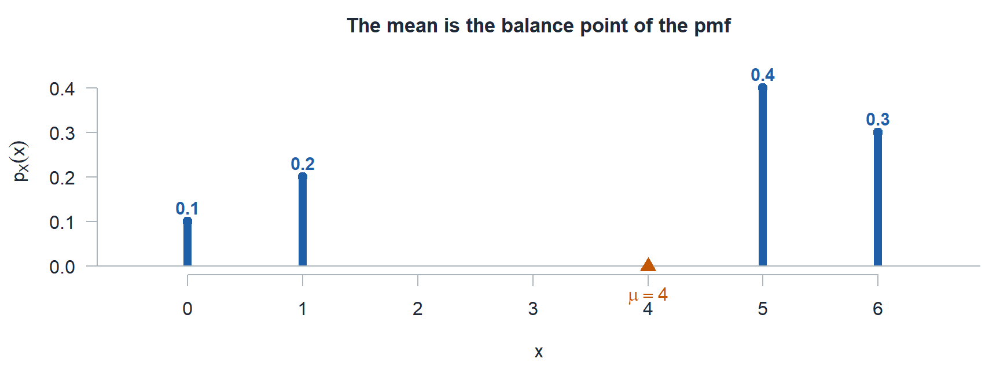
WarningAn Expected Value Is Not a Prediction
\(X\) is never \(4\). It can only be \(0\), \(1\), \(5\), or \(6\). Expected value is the balance point of the pmf, the long run average over many repetitions, and it does not have to be a value \(X\) can take.
Variance and Standard Deviation
ImportantDefinition: Variance and Standard Deviation
\[V(X) = \sigma_X^2 = \sum_{\text{all } x} (x - \mu)^2 \, p_X(x) = E[(X - \mu)^2]\]
The shortcut formula, which is usually less work: \[V(X) = E(X^2) - [E(X)]^2, \qquad \text{where } E(X^2) = \sum_x x^2 \, p_X(x).\]
The standard deviation is \(\sigma_X = \sqrt{V(X)}\), back in the units of \(X\).
Same idea as \(s^2\) from Lesson 2, except the weights are probabilities instead of \(1/(n-1)\).
Same \(X\) again, with \(\mu = 4\) from above.
| \(x\) | 0 | 1 | 5 | 6 |
|---|---|---|---|---|
| \(p_X(x)\) | 0.1 | 0.2 | 0.4 | 0.3 |
By the definition. Squared distance from \(\mu = 4\), weighted:
\[V(X) = (0-4)^2(0.1) + (1-4)^2(0.2) + (5-4)^2(0.4) + (6-4)^2(0.3)\]
\[V(X) = (16)(0.1) + (9)(0.2) + (1)(0.4) + (4)(0.3) = 1.6 + 1.8 + 0.4 + 1.2 = 5\]
By the shortcut. Same answer, fewer subtractions. First \(E(X^2)\), which squares the value and keeps the same weight:
\[E(X^2) = (0^2)(0.1) + (1^2)(0.2) + (5^2)(0.4) + (6^2)(0.3) = 0 + 0.2 + 10 + 10.8 = 21\]
\[V(X) = 21 - 4^2 = 21 - 16 = 5\]
So \(\sigma_X = \sqrt{5} \approx 2.236\).
Start to Finish: A Scratch-Off Ticket
A gas station sells an \(\$8\) scratch-off ticket. Every ticket wins something. Let \(X\) be the dollars it pays out.
\[p_X(x) = \begin{cases} 0.50 & \text{if } x = 2 \\ 0.20 & \text{if } x = 5 \\ 0.20 & \text{if } x = 10 \\ 0.10 & \text{if } x = 20 \\ 0 & \text{otherwise} \end{cases}\]
| \(x\) | 2 | 5 | 10 | 20 |
|---|---|---|---|---|
| \(p_X(x)\) | 0.50 | 0.20 | 0.20 | 0.10 |
The values are not consecutive, and they do not start at \(0\) or \(1\). A random variable takes whatever values the problem hands it.
a) Is this a legal pmf?
TipAnswer
Every value is nonnegative, and \(0.50 + 0.20 + 0.20 + 0.10 = 1\). Both conditions hold.
b) Build the cdf.
TipAnswer
Run a total through the pmf: \(0.50\), then \(0.50 + 0.20 = 0.70\), then \(0.70 + 0.20 = 0.90\), then \(0.90 + 0.10 = 1\).
\[F_X(x) = \begin{cases} 0 & \text{if } x < 2 \\ 0.50 & \text{if } 2 \le x < 5 \\ 0.70 & \text{if } 5 \le x < 10 \\ 0.90 & \text{if } 10 \le x < 20 \\ 1 & \text{if } x \ge 20 \end{cases}\]
| \(x\) | 2 | 5 | 10 | 20 |
|---|---|---|---|---|
| \(p_X(x)\) | 0.50 | 0.20 | 0.20 | 0.10 |
| \(F_X(x)\) | 0.50 | 0.70 | 0.90 | 1.00 |
The gaps show up as long flats. \(F\) holds at \(0.70\) from \(5\) all the way to \(10\), and is still \(0\) up to \(2\), since \(2\) is the smallest payout.
c) Find \(E(X)\).
TipAnswer
\[E(X) = (2)(0.50) + (5)(0.20) + (10)(0.20) + (20)(0.10) = 1 + 1 + 2 + 2 = \mathbf{\$6.00}\]
The ticket costs \(\$8\) and pays back \(\$6\) on average, so the player is down two dollars a ticket in the long run. And \(\$6\) is not a payout the ticket can produce.
d) Find \(V(X)\) and \(\sigma_X\).
TipAnswer
Use the shortcut. First \(E(X^2)\), which squares the value and keeps the same weight:
\[E(X^2) = (2^2)(0.50) + (5^2)(0.20) + (10^2)(0.20) + (20^2)(0.10) = 2 + 5 + 20 + 40 = 67\]
\[V(X) = E(X^2) - [E(X)]^2 = 67 - 6^2 = \mathbf{31}, \qquad \sigma_X = \sqrt{31} \approx \mathbf{\$5.57}\]
The standard deviation is nearly as large as the mean. That \(\$20\) payout is uncommon, but it sits far enough out to drive most of the spread.
e) Find \(P(X = 10)\), \(P(X \le 5)\), \(P(X < 5)\), \(P(X \ge 10)\), \(P(5 \le X \le 10)\), \(P(X = 7)\), \(F_X(8)\), and \(F_X(1)\).
TipAnswers
- \(P(X = 10) = p_X(10) = \mathbf{0.20}\), straight off the pmf.
- \(P(X \le 5) = F_X(5) = \mathbf{0.70}\), straight off the cdf.
- \(P(X < 5) = F_X(2) = \mathbf{0.50}\). Strict inequality drops \(x = 5\), and \(2\) is the next value down.
- \(P(X \ge 10) = 1 - F_X(5) = \mathbf{0.30}\). Complement, cut below the smallest value in the event.
- \(P(5 \le X \le 10) = F_X(10) - F_X(2) = 0.90 - 0.50 = \mathbf{0.40}\). Subtract below the left endpoint, not at it, or you lose \(x = 5\). Check the pmf: \(0.20 + 0.20 = 0.40\).
- \(P(X = 7) = \mathbf{0}\). Seven sits inside the range of \(X\), but no mass sits on it.
- \(F_X(8) = \mathbf{0.70}\) and \(F_X(1) = \mathbf{0}\). Any real number is a legal input to \(F\).
For a discrete \(X\), \(\le\) and \(<\) are not interchangeable. Ask whether the endpoint is inside the event, and with gaps, cut at the next value that actually exists.
f) Given the ticket paid more than \(\$2\), what is the probability it paid at least \(\$10\)?
TipAnswer
Lesson 6 conditional probability, now on a random variable. With \(A = \{X \ge 10\}\) inside \(B = \{X > 2\}\), we get \(A \cap B = A\), so
\[P(X \ge 10 \mid X > 2) = \frac{P(X \ge 10)}{P(X > 2)} = \frac{0.30}{1 - F_X(2)} = \frac{0.30}{0.50} = \mathbf{0.60}\]
Only \(30\%\) of all tickets pay \(\$10\) or more, but among the tickets that beat the minimum payout, \(60\%\) do.
Break!
Reese, Softball
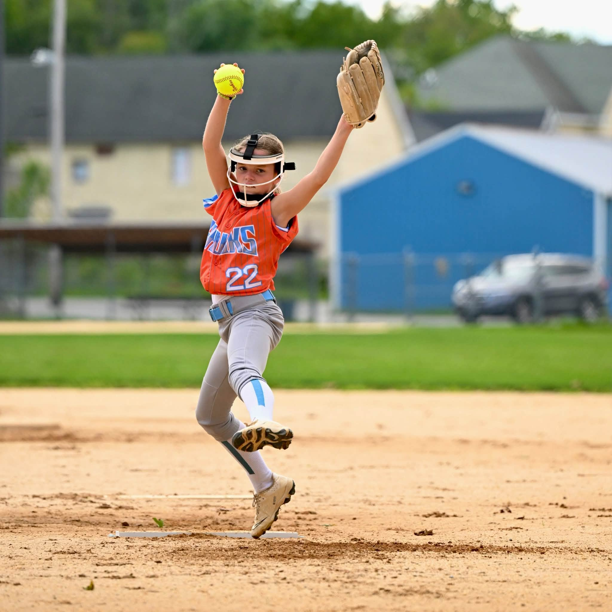
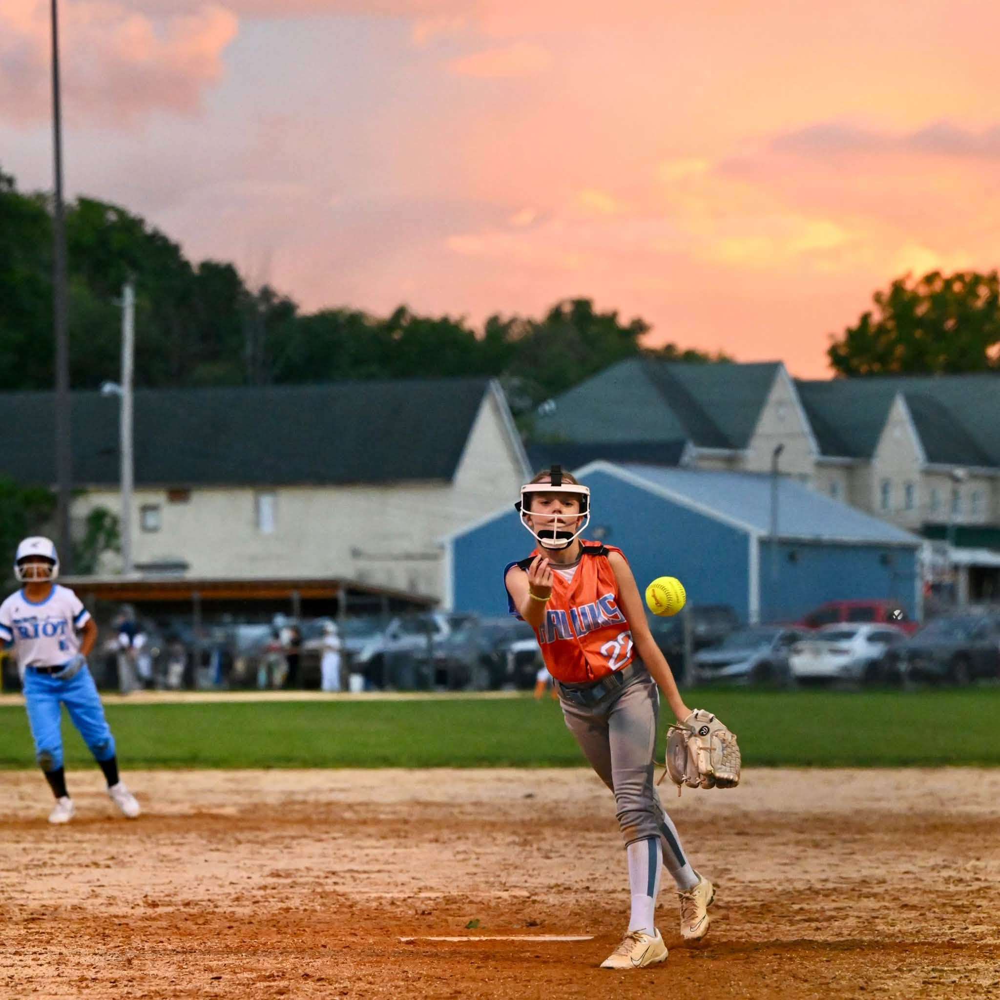
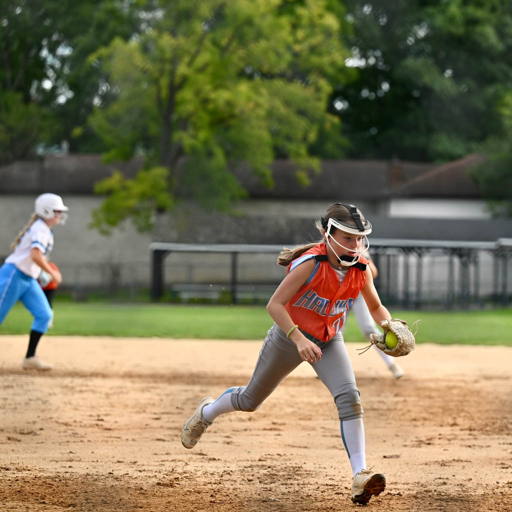
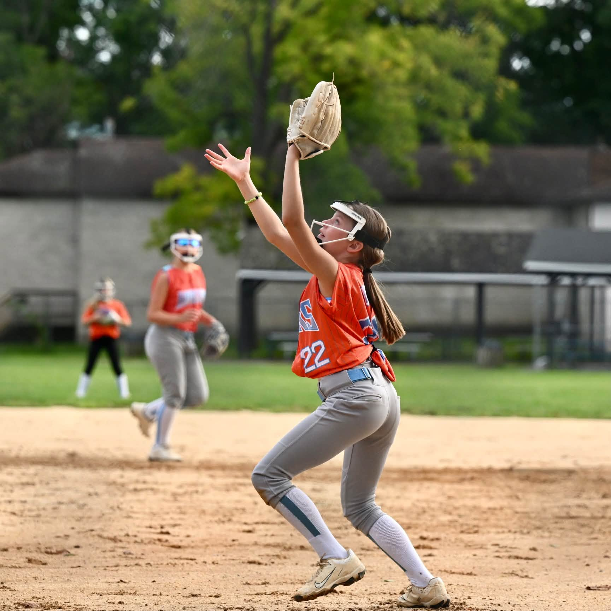
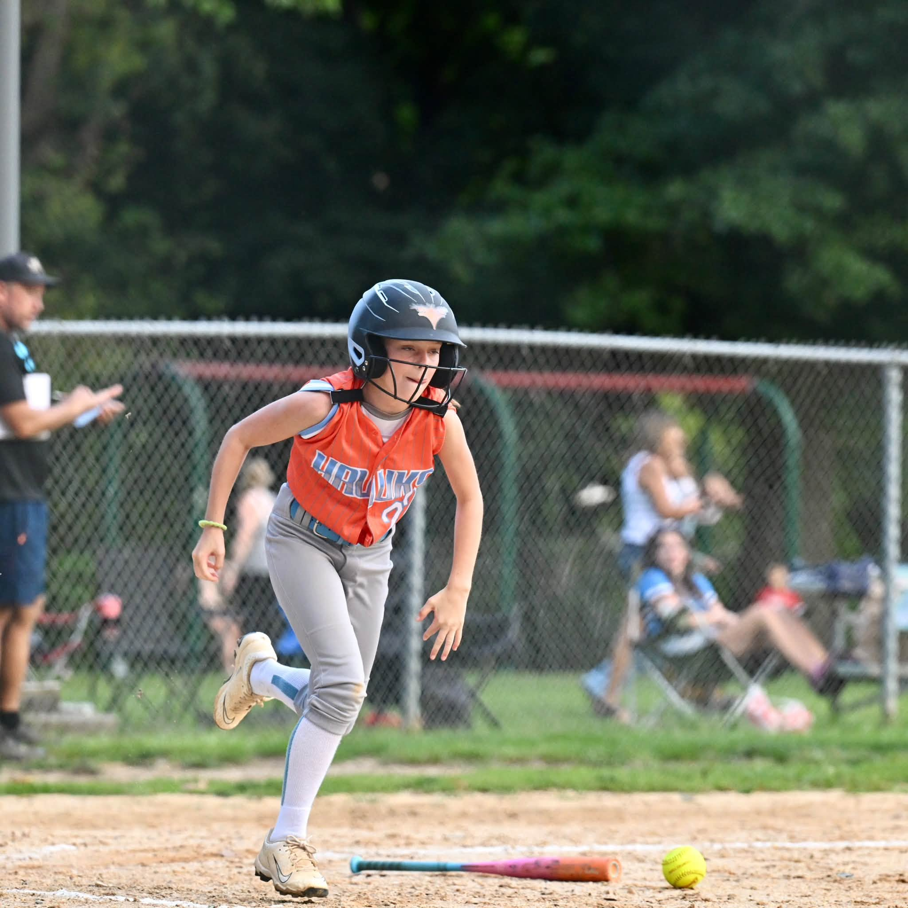
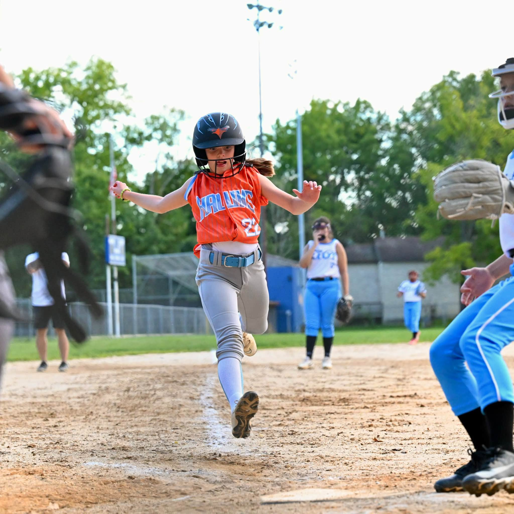
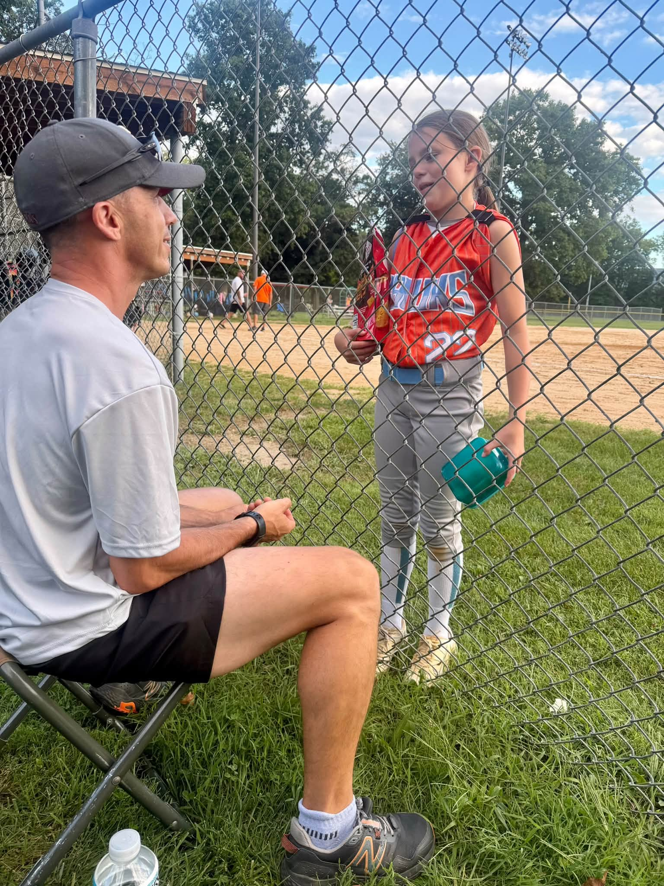
The Takeaway for Today
NoteKey Concepts from Lesson 9
- Expected value: \(E(X) = \sum_x x\,p_X(x)\). Variance: \(V(X) = E(X^2) - [E(X)]^2\)
- A binomial experiment is \(n\) fixed independent trials, two outcomes, constant \(p\)
- pmf: \(p(x) = \dbinom{n}{x} p^x (1-p)^{n-x}\) for \(x = 0, 1, \dots, n\)
- Fully specify a distribution: name the variable, name the distribution, give the parameters, as in \(X \sim \text{Binom}(n = 5,\ p = 0.75)\)
- In R-Lite:
dbinomis the pmf,pbinomis the cdf, and every other statement is built from those two with a complement or a subtraction - Mean and variance: \(E(X) = np\) and \(V(X) = np(1-p)\)
Opening: Five Free Throws
Shoot \(5\) free throws. The probability of making one is \(75\%\). What is the probability of making exactly \(3\)?
Start with one specific sequence, say make, make, make, miss, miss. The shots are independent, so the Lesson 7 multiplication rule turns it into a product:
\[(0.75)(0.75)(0.75)(0.25)(0.25) = (0.75)^3 (0.25)^2 = 0.0264\]
That is one way to make exactly \(3\). How many ways are there? Choose which \(3\) of the \(5\) attempts are the makes, which is Lesson 5 counting:
\[\binom{5}{3} = 10\]
Every one of those \(10\) orders has the same probability \(0.0264\), because it uses the same three \(0.75\)s and the same two \(0.25\)s in a different order. The \(10\) orders are mutually exclusive, so the Lesson 4 addition rule just adds them:
\[P(X = 3) = \binom{5}{3} (0.75)^3 (0.25)^2 = 10(0.0264) = \mathbf{0.264}\]
Lesson 5 Counting \(\dbinom{5}{3} = 10\) orders have exactly three makes.
Lesson 7 Multiplication Independence turns one order into \((0.75)^3(0.25)^2\).
Lesson 4 Addition The \(10\) orders are disjoint, so their probabilities add.
Three lessons, one formula.
Generalize
Replace \(5\) with \(n\), replace \(3\) with \(x\), and replace \(0.75\) with \(p\).
ImportantDefinition: The Binomial pmf
\[p(x) = \binom{n}{x} p^x (1-p)^{n-x}, \qquad x = 0, 1, 2, \dots, n\]
- \(p^x\) is the \(x\) successes
- \((1-p)^{n-x}\) is the \(n - x\) failures
- \(\dbinom{n}{x}\) is how many orders produce exactly \(x\) successes
NoteFully specify the distribution
\[X \sim \text{Binom}(n = 5,\ p = 0.75)\]
- Designate the random variable. \(X\) is the number of makes in \(5\) attempts.
- Name the distribution. Binomial.
- Specify the parameters. \(n = 5\) and \(p = 0.75\).
All three, every time. A distribution without its parameters is not an answer.
Is It a Binomial Experiment?
ImportantThe Four Conditions: BINS
- Binary. Each trial has two outcomes, success and failure.
- Independent. The trials do not affect each other.
- Number fixed. \(n\) is set in advance, not decided as you go.
- Same probability. \(p\) is identical on every trial.
All four, or it is not binomial. Check them:
- A cadet shoots \(40\) rounds at qualification, hitting each target with probability \(0.7\). Count the hits.
Binomial. Binary (hit or miss), independent shots, \(n = 40\) fixed, \(p = 0.7\) every round. \(X \sim \text{Binom}(40, 0.7)\).
- Shoot free throws until you miss. Count the makes.
Not binomial. \(n\) is not fixed. You stop when the miss happens, so the number of trials is itself random. That is a geometric random variable, not one of ours this semester.
- Draw \(5\) cadets from a \(12\) cadet squad, \(4\) of whom are Firsties. Count the Firsties.
Not binomial. Drawing without replacement breaks both I and S. After you pull one Firstie, the next draw has \(3\) Firsties left out of \(11\), so \(p\) moved from \(4/12\) to \(3/11\).
Finding Probabilities with the Binomial Distribution
\(X \sim \text{Binom}(n = 5,\ p = 0.75)\), our free throw shooter.
\(P(X = 3)\), exactly three makes. Straight off the pmf, the way we just did it:
\[P(X = 3) = \binom{5}{3}(0.75)^3(0.25)^2 = 0.2637\]
\(P(X \le 3)\), three or fewer makes. The pmf gives one bar at a time, so evaluate it at every value the event contains:
\[\begin{aligned} P(X = 0) &= \binom{5}{0}(0.75)^0(0.25)^5 = 0.0010 \\ P(X = 1) &= \binom{5}{1}(0.75)^1(0.25)^4 = 0.0146 \\ P(X = 2) &= \binom{5}{2}(0.75)^2(0.25)^3 = 0.0879 \\ P(X = 3) &= \binom{5}{3}(0.75)^3(0.25)^2 = 0.2637 \end{aligned}\]
They are disjoint, so add them:
\[P(X \le 3) = 0.0010 + 0.0146 + 0.0879 + 0.2637 = 0.3672\]
Write that as one line:
\[P(X \le 3) = \sum_{x = 0}^{3} \binom{5}{x}(0.75)^x(0.25)^{5-x}\]
This is the cdf of the binomial distribution.
| statement | R-Lite | value |
|---|---|---|
| \(P(X = 3)\) | dbinom(3, 5, 0.75) |
|
| \(P(X \le 3)\) | pbinom(3, 5, 0.75) |
|
| \(P(X < 3)\) | pbinom(2, 5, 0.75) |
|
| \(P(X > 3)\) | 1 - pbinom(3, 5, 0.75) |
|
pbinom(3, 5, 0.75, lower.tail = FALSE) |
||
| \(P(X \ge 3)\) | 1 - pbinom(2, 5, 0.75) |
|
pbinom(2, 5, 0.75, lower.tail = FALSE) |
||
| \(P(X \ne 3)\) | 1 - dbinom(3, 5, 0.75) |
|
| \(P(2 \le X \le 4)\) | pbinom(4, 5, 0.75) - pbinom(1, 5, 0.75) |
|
| \(P(2 < X < 4)\) | dbinom(3, 5, 0.75) |
Fill in the value column in class.
Mean and Variance
ImportantMean and Variance of a Binomial
If \(X \sim \text{Binom}(n, p)\), then \[E(X) = np, \qquad V(X) = np(1-p), \qquad \sigma = \sqrt{np(1-p)}.\]
For the free throw shooter:
\[\begin{aligned} \mu = E(X) &= np = 5(0.75) = 3.75 \\ \sigma^2 = V(X) &= np(1-p) = 5(0.75)(0.25) = 0.9375 \\ \sigma &= \sqrt{np(1-p)} = \sqrt{0.9375} = 0.968 \end{aligned}\]
Out of \(5\) attempts a \(75\%\) shooter makes \(3.75\) on average, give or take about one.
NoteHow We Derived the Distributions
Start from the Lesson 8 definition and substitute the binomial pmf.
\[E(X) = \sum_x x\,p(x) = \sum_{x=0}^{n} x \binom{n}{x} p^x (1-p)^{n-x}\]
The \(x = 0\) term is zero, so start at \(1\). Use \(x\binom{n}{x} = n\binom{n-1}{x-1}\) and pull \(np\) out front.
\[E(X) = np \sum_{x=1}^{n} \binom{n-1}{x-1} p^{x-1} (1-p)^{n-x}\]
Let \(y = x - 1\). What is left is a full binomial pmf on \(n-1\) trials, so it sums to \(1\).
\[E(X) = np \sum_{y=0}^{n-1} \binom{n-1}{y} p^{y} (1-p)^{(n-1)-y} = np\]
For the variance, the same trick twice gives
\[E[X(X-1)] = n(n-1)p^2 \quad\Longrightarrow\quad E(X^2) = n(n-1)p^2 + np\]
Then use the Lesson 8 shortcut \(V(X) = E(X^2) - [E(X)]^2\).
\[V(X) = n(n-1)p^2 + np - (np)^2 = np - np^2 = np(1-p)\]
What the Distribution Looks Like
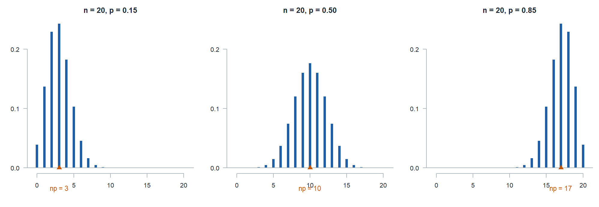
- The mean sits at \(np\), and the whole distribution slides with it.
- \(p = 0.5\) is symmetric. Push \(p\) toward either end and the distribution skews away from that end, because it is running out of room.
- The spread \(np(1-p)\) is largest at \(p = 0.5\) and shrinks as \(p\) approaches \(0\) or \(1\). A \(95\%\) shooter is predictable, a \(50\%\) shooter is not.
Class Problem
The same shooter takes \(40\) free throws, so \(X \sim \text{Binom}(40, 0.75)\). What is the probability the number of makes lands either more than one standard deviation above the mean or more than one standard deviation below it, that is, \(X\) outside the interval \((\mu - \sigma,\ \mu + \sigma)\)?
TipAnswer
\[\mu = np = 40(0.75) = 30, \qquad \sigma = \sqrt{np(1-p)} = \sqrt{7.5} = 2.74\]
More than one standard deviation away means outside \(30 \pm 2.74\), that is outside \((27.26,\ 32.74)\). \(X\) counts makes, so the event is \(X \le 27\) or \(X \ge 33\).
\[P(X \le 27) + P(X \ge 33) = 0.1791 + 0.1820 = 0.3611\]
pbinom(27, 40, 0.75) + 1 - pbinom(32, 40, 0.75)
Same answer from the other direction: 1 - (pbinom(32, 40, 0.75) - pbinom(27, 40, 0.75)).
A Fun Exercise
Board Problems
Problem 2: Drone Sorties
A platoon flies \(12\) drone sorties in a week. Each sortie returns without a maintenance fault with probability \(0.85\), independently. Let \(X\) be the number of clean returns.
NoteQuestions
Fully specify the distribution of \(X\).
Verify BINS.
Give the R-Lite call and the value for each: \(P(X = 12)\), \(P(X < 10)\), \(P(X \le 10)\), \(P(X > 10)\), \(P(X \ge 10)\), \(P(X \ne 12)\), and \(P(9 \le X \le 11)\).
Which two of those differ only because of a strict versus inclusive endpoint, and by how much?
Find \(E(X)\), \(V(X)\), and \(\sigma_X\), then find the probability \(X\) lands more than one standard deviation above or below the mean.
TipAnswers
\(X\) is the number of clean returns in \(12\) sorties. \(X \sim \text{Binom}(n = 12,\ p = 0.85)\).
B: clean return or fault. I: stated independent. N: \(n = 12\) sorties, planned in advance. S: \(p = 0.85\) on every sortie. All four hold.
| statement | R-Lite | value |
|---|---|---|
| \(P(X = 12)\) | dbinom(12, 12, 0.85) |
0.1422 |
| \(P(X < 10)\) | pbinom(9, 12, 0.85) |
0.2642 |
| \(P(X \le 10)\) | pbinom(10, 12, 0.85) |
0.5565 |
| \(P(X > 10)\) | 1 - pbinom(10, 12, 0.85) |
0.4435 |
| \(P(X \ge 10)\) | 1 - pbinom(9, 12, 0.85) |
0.7358 |
| \(P(X \ne 12)\) | 1 - dbinom(12, 12, 0.85) |
0.8578 |
| \(P(9 \le X \le 11)\) | pbinom(11, 12, 0.85) - pbinom(8, 12, 0.85) |
0.7656 |
\(P(X \le 10)\) and \(P(X < 10)\) differ by \(p(10) = 0.2924\). So do \(P(X > 10)\) and \(P(X \ge 10)\), by the same \(0.2924\). That single bar carries almost \(30\%\) of the probability, so misreading the inequality is not a small error.
\[E(X) = np = 10.2, \qquad V(X) = np(1-p) = 1.53, \qquad \sigma_X = \sqrt{1.53} = 1.2369\]
One standard deviation around the mean is \((8.9631,\ 11.4369)\), so more than one away means \(X \le 8\) or \(X \ge 12\).
\[P(X \le 8) + P(X \ge 12) = 0.0922 + 0.1422 = \mathbf{0.2344}\]
R-Lite: pbinom(8, 12, 0.85) + 1 - pbinom(11, 12, 0.85).
Problem 3: Rifle Qualification
A cadet fires \(40\) rounds. Each hits with probability \(0.7\), independently. Let \(X\) be the number of hits. Qualification is \(30\) hits.
NoteQuestions
Fully specify the distribution of \(X\).
Verify BINS.
Give the R-Lite call and the value for each: \(P(X = 30)\), \(P(X < 30)\), \(P(X \le 30)\), \(P(X > 30)\), and \(P(X \ge 30)\). Before you run \(P(X \ge 30)\), say whether it should be above or below \(0.5\).
Find \(E(X)\), \(V(X)\), and \(\sigma_X\), interpret \(\sigma_X\) in one sentence, then find the probability \(X\) lands more than one standard deviation above or below the mean.
TipAnswers
\(X\) is the number of hits in \(40\) rounds. \(X \sim \text{Binom}(n = 40,\ p = 0.7)\).
B: hit or miss. I: stated independent. N: \(n = 40\) rounds, fixed by the standard. S: \(p = 0.7\) on every round. All four hold.
\(P(X \ge 30)\) should be below \(0.5\), because \(30\) sits above the mean of \(28\), so you are asking for the smaller side.
| statement | R-Lite | value |
|---|---|---|
| \(P(X = 30)\) | dbinom(30, 40, 0.7) |
0.1128 |
| \(P(X < 30)\) | pbinom(29, 40, 0.7) |
0.6913 |
| \(P(X \le 30)\) | pbinom(30, 40, 0.7) |
0.8041 |
| \(P(X > 30)\) | 1 - pbinom(30, 40, 0.7) |
0.1959 |
| \(P(X \ge 30)\) | 1 - pbinom(29, 40, 0.7) |
0.3087 |
- \[E(X) = np = 28, \qquad V(X) = np(1-p) = 8.4, \qquad \sigma_X = \sqrt{8.4} = 2.8983\]
A typical qualification lands within about \(3\) hits of \(28\).
One standard deviation around the mean is \((25.1017,\ 30.8983)\), so more than one away means \(X \le 25\) or \(X \ge 31\).
\[P(X \le 25) + P(X \ge 31) = 0.1926 + 0.1959 = \mathbf{0.3885}\]
R-Lite: pbinom(25, 40, 0.7) + 1 - pbinom(30, 40, 0.7).
Problem 4: The Wrong Model
A squad has \(12\) cadets, \(4\) of whom are Firsties. The squad leader picks \(5\) at random for a detail. Let \(X\) be the number of Firsties picked.
NoteQuestions
Which of BINS fails?
Compute \(P(X = 2)\) correctly, using Lesson 5 counting.
Compute what the binomial would have given with \(p = 4/12\), and compare.
TipAnswers
I and S both fail. The picks are without replacement, so the first pick changes the pool for the second. If the first pick is a Firstie, the next has probability \(3/11\), not \(4/12\). Nothing fixes this: \(p\) is not constant and the trials are not independent.
Count outcomes, exactly the Lesson 5 move. Choose \(2\) of the \(4\) Firsties and \(3\) of the \(8\) others, out of all ways to choose \(5\) of \(12\):
\[P(X = 2) = \frac{\dbinom{4}{2}\dbinom{8}{3}}{\dbinom{12}{5}} = \frac{(6)(56)}{792} = \frac{336}{792} = \mathbf{0.4242}\]
- The binomial with \(n = 5\) and \(p = 1/3\) gives
\[\binom{5}{2}\left(\tfrac{1}{3}\right)^2\left(\tfrac{2}{3}\right)^3 = \mathbf{0.3292}\]
Off by about \(0.10\), roughly a \(22\%\) relative error. The sample is \(5\) of the \(12\) cadets, a huge slice of the population, so the approximation has no business being used here.
Problem 5: Stretch
A signal has a \(0.35\) chance of getting through on any single transmission attempt, independently each time.
NoteQuestions
With \(n\) attempts, write \(P(\text{at least one gets through})\) in terms of \(n\).
How many attempts are needed for that probability to reach \(0.99\)?
You now plan \(20\) attempts. What is the smallest \(k\) with \(P(X \le k) \ge 0.99\), and what R-Lite call answers it directly?
TipAnswers
- Lesson 7’s move. “At least one” is the complement of “none”, and “none” is \(n\) failures in a row under independence:
\[P(X \ge 1) = 1 - P(X = 0) = 1 - \binom{n}{0}(0.35)^0(0.65)^n = 1 - (0.65)^n\]
- Solve \(1 - (0.65)^n \ge 0.99\), so \((0.65)^n \le 0.01\):
\[n \ge \frac{\ln(0.01)}{\ln(0.65)} = \frac{-4.605}{-0.4308} = 10.69\]
Round up, since \(n\) is a whole number of attempts, so \(n = \mathbf{11}\). Check: \(1 - (0.65)^{11} = 0.9912\), and \(1 - (0.65)^{10} = 0.9865\) falls short.
- That is what
qbinomis for:qbinom(0.99, 20, 0.35)returns the smallest \(k\) with \(F(k) \ge 0.99\), which is \(\mathbf{12}\). Noteqbinomruns the cdf backwards, taking a probability and handing back a value, the reverse ofpbinom.
Before You Leave
Today
- \(E(X)\) balances the pmf, and \(V(X) = E(X^2) - [E(X)]^2\) measures its spread
- The binomial is counting, multiplication, and addition from Block I fused into one formula
- Check BINS before you use it
dbinomandpbinomcover every probability statement once you handle the endpoints- \(E(X) = np\) and \(V(X) = np(1-p)\), no table required
Any questions?
Next Lesson
Lesson 10: Poisson Distribution
- Identify settings modeled by the Poisson distribution, including the Poisson process
- Compute Poisson probabilities using \(\mu = \lambda t\) and interpret \(\mu\)
- State and interpret the mean and variance of a Poisson random variable, noting that both equal \(\mu\)
Reading: Devore 3.6
Upcoming Graded Events
- WebAssign 3.4 - Due at the start of Lesson 10
- WPR I - Lesson 16 (covers Lessons 1-13)
- TEE - 15-18 Dec 2026